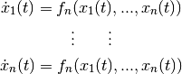
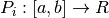
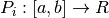
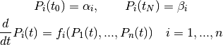
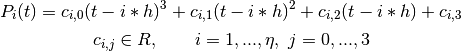

About PyTrajectory¶
PyTrajectory is a Python library for the determination of the feed forward control to achieve a transition between desired states of a nonlinear control system.
Mathematical background¶
Given a system of autonomous differential equations

with ![t \in [a, b]](../_images/math/7ee1e80a90cec6b0dea8088399ebb8442e81fc28.png) and Dirichlet boundary conditions
and Dirichlet boundary conditions

the collocation method to solve the problem basically works as follows.
We choose  collocation points
collocation points  from the interval
from the interval
![[a, b]](../_images/math/1d2d3c2141e9f7387a2d26b1ea40c2aabd96f3ac.png) where
where  and search for functions
 which satisfy the following conditions:
and search for functions
 which satisfy the following conditions:

Through these demands the exact solution of the ode system will be approximated.
Candidate functions¶
PyTrajectory uses cubic spline functions as candidates for the approximation of the
solution. Splines are piecewise polynomials with a global differentiability.
The connection points  between the polynomial sections are equidistantly
and are referred to as nodes.
between the polynomial sections are equidistantly
and are referred to as nodes.

The polynomial sections can be created as follows.

In addition to the steadiness the spline functions should be twice steadily differentiable in
the nodes  .
.